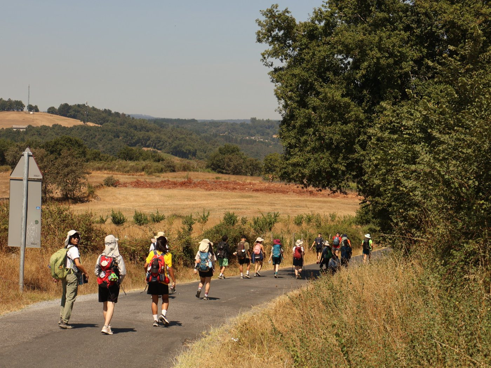

CAMINO DE SANTIAGO · 2025
走完朝聖之路
2025 年 8 月，透過第一屆政府青年百億圓夢計畫，從 Sarria 出發，徒步約 114 公里走完西班牙朝聖之路，抵達聖地牙哥大教堂並取得朝聖證書，回國後整理成 13 篇影像紀錄，用 Canon EOS R50 拍下沿途風景，每篇都配上一首小詩。一路跟著貝殼與黃色箭頭前進，也用相機記錄沿途的光、城市與路標。
Sarria 薩里亞起點
約 114 km徒步距離
Compostela朝聖證書
13 篇影像紀錄貼文
TIME ON THE ROAD
我們花的時間
9 天2025.08.06 – 08.14
約 114 km每天 10–16 km
- D1 08/06 Sarria → Morgade 12 km
- D2 08/07 Morgade → Portomarín 11 km
- D3 08/08 Portomarín → Ventas de Narón 13 km
- D4 08/09 Ventas de Narón → Palas de Rei 12 km
- D5 08/10 Palas de Rei → Melide 15 km
- D6 08/11 Melide → Arzúa 16 km
- D7 08/12 Arzúa → O Pino 16 km
- D8 08/13 O Pino → Vilamaior 15 km
- D9 08/14 Vilamaior → Santiago 10 km
隔天（8/15）再前往 Finisterre，在 Km 0,000 畫下句點。
朝聖簡錄
法國之路最後一段・約 114 km從 Sarria 出發，沿著加利西亞的鄉間小路一站站往西走，每天約 20–30 公里，在庇護所、咖啡館和教堂蓋滿朝聖護照。抵達聖地牙哥大教堂、拿到朝聖證書之後，再一路去到大西洋邊的 Finisterre，在 Km 0,000 的里程碑前畫下句點。
- 01 Sarria 薩里亞 起點
- 02 Portomarín 波爾托馬林
- 03 Palas de Rei 帕拉斯德雷
- 04 Melide 梅利德
- 05 Arzúa 阿爾蘇阿
- 06 Santiago de Compostela 聖地牙哥 抵達大教堂
- 07 Finisterre 菲尼斯特雷 Km 0・世界盡頭
點任一格可放大，左右鍵切換。
{{roll.no}}
{{roll.title}}

{{lb.cap}}{{lb.counter}}